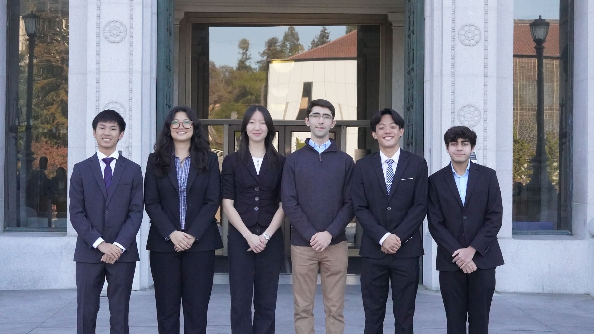

As a team, we worked with Malin Space Science Systems through Engineering Solutions at Berkeley to design a focus actuator for space camera applications used primarily in NASA rovers. We evaluated several actuation approaches before settling on a mechanical design, with a heavy emphasis on fatigue resistance and product lifetime, then built a working prototype and tested it for positional accuracy and repeatability.
My work on this project was the control systems and algorithms. A stepper run open loop drifts, because backlash makes the element land in a slightly different place depending on which direction it approached from, so the firmware had to measure that error rather than assume it away. The system ran a DRV8834 stepper driver in microstepping mode, with limit switches at each end of travel providing an absolute home reference and a ratiometric Hall sensor giving continuous position feedback. I designed a bidirectional homing and midpoint referencing algorithm using limit switches and a Hall sensor to compute and compensate for mechanical backlash, achieving 0.139 mil actuation per degree of rotation and overall actuation precision of ±2 mil.
I validated the electronics across several 3D printed housing iterations, calibrating steps against actual displacement, testing median filtering on the Hall signal, checking limit switch reliability over repeated actuations, and verifying that the closed loop compensation removed the direction dependent error.
No pictures or additional information due to NDA.